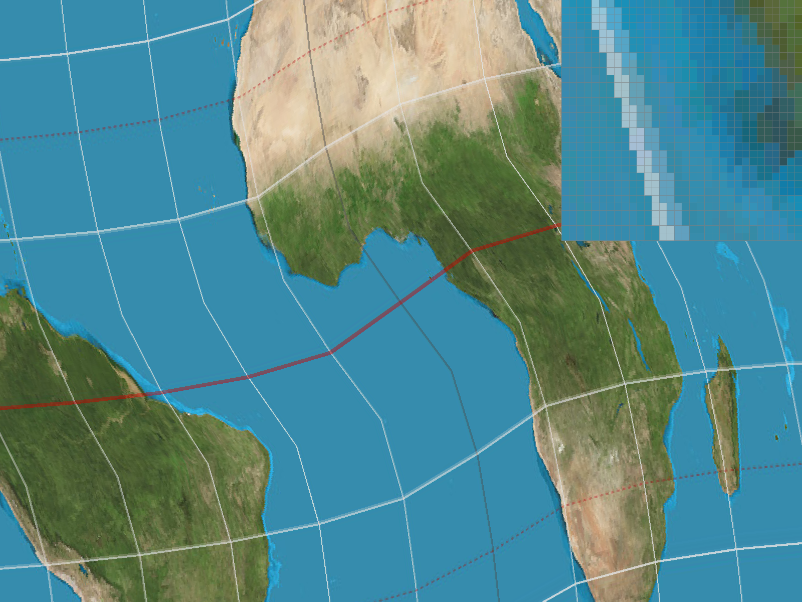
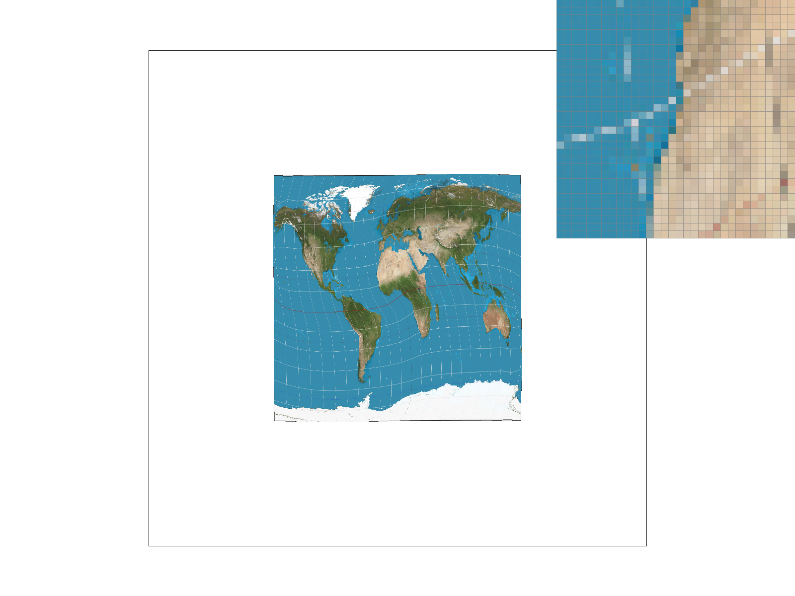

Task 5: "Pixel Sampling" for Texture Mapping
Explaining Pixel Sampling and Texture Mapping
Texture mapping is the process of projecting a 2D image (texture) onto a 3D surface. Because screen pixels rarely map exactly 1-to-1 to texture pixels, we must perform pixel sampling to determine the correct color for a given screen pixel. This involves mapping screen-space coordinates \((x, y)\) back to normalized texture-space coordinates \((u, v)\) and fetching the color from the texture image at that location.
Implementation
Texture Mapping
To implement texture mapping in RasterizerImp::rasterize_textured_triangle, I reused the code in rasterize_interpolated_color_triangle with a few changes:
- Barycentric Interpolation: For points inside the triangle, I compute their barycentric coordinates \((\alpha, \beta, \gamma)\) with the same algorithm.But instead of interpolate the given color values, I interpolated the \((u,v)\) coordinates: \((u,v)=\alpha(u_0,v_0)+\beta(u_0,v_0)+\gamma (u_2,v_2)\).
- Texture Sampling: Using the interpolated \((u, v)\) coordinates, I sampled the texture color. Depending on the current pixel sampling method (
psm), I called eithertex.sample_nearest(u,v)ortex.sample_bilinear(u,v). The resulting color was then written to thesample_buffer.
Sampling Methods
-
Nearest Neighbor Sampling (
sample_nearest)Nearest sampling is the simplest and fastest approach. For any given \((u, v)\) coordinate, it simply finds the single closest texel in the texture space and uses its exact color.
- Scale the normalized
uvcoordinates by the texture'swidthandheight. - Use the
floorfunction to get the nearest integer texel coordinates. - Clamp the coordinates to
width(height)-1to ensure they don’t exceed the texture boundaries.
- Scale the normalized
-
Bilinear Sampling (
sample_bilinear)Bilinear sampling smooths out the texture by considering the 4 closest texels around the sample point and computing a distance-weighted average of their colors.
- Map the UV coordinates to the texture space: Because texel colors are technically sampled at the center of each pixel (e.g., at \(0.5, 1.5, 2.5\)), directly finding the surrounding neighbors can be complex. To simplify the computation, we scale the \((u, v)\) coordinates by the texture's
widthandheight, and then subtract \(0.5\). This shifts the coordinate system so we can easily use thefloorfunction to find the texel. - Apply the
floorfunction to the shifted coordinates to get the top-left index \((s_0, t_0)\), and add \(1\) to get bottom-right index \((s_1, t_1)\). - After clamping the indices to prevent out-of-bounds access, fetch the colors of the 4 texels \((u_{00},u_{10},u_{01},u_{11})\).
- Perform bilinear interpolation: \(u_0=\text{lerp}(x-s_0,u_{00},u_{10}),u_1=\text{lerp}(x-s_0,u_{01},u_{11}),f(x,y)=\text{lerp}(y-t_0,u_0,u_1)\)
- Map the UV coordinates to the texture space: Because texel colors are technically sampled at the center of each pixel (e.g., at \(0.5, 1.5, 2.5\)), directly finding the surrounding neighbors can be complex. To simplify the computation, we scale the \((u, v)\) coordinates by the texture's
Result Screenshot


The screenshots above are images of the test2.svg rendered under four different texture and pixel sampling settings. By zooming in using the pixel inspector, we can clearly observe how the sampling methods handle the texture details, especially along curved boundaries and high-frequency color transitions.
Relative Differences:
- At 1 sample per pixel:
- Nearest sampling produces a highly blocky and pixelated image, because it simply takes the color of the closest single texel. This leads to severe aliasing along the edges of the shapes in the texture.
- Bilinear sampling smoothly interpolates between the surrounding texels. This effectively blurs the boundaries and the lines, creating continuous color gradients.
- At 16 samples per pixel:
- Both Nearest and Bilinear look smooth, and it is difficult to tell them apart at a glance.
- Reason: When we perform supersampling anti-aliasing, the rasterizer is taking 16 independent point samples within a single screen pixel and averaging them. This process of taking 16 slightly offset "nearest" samples and averaging them effectively mimics the weighted neighborhood averaging that bilinear sampling does—except it is happening in screen space. Because the high sample rate already provides massive spatial smoothing, the additional localized smoothing from bilinear sampling becomes redundant, resulting in nearly identical visuals.
When will there be a large difference?
A large visual difference between Nearest and Bilinear sampling primarily occurs under two conditions:
- Texture Magnification: When the texture resolution is lower than the screen resolution. In this case, a single texel maps to multiple screen pixels. Nearest sampling will render these texels as solid squares, whereas bilinear sampling will create smooth gradients between them.
- Low Screen Sampling Rate: As observed above, if supersampling is enabled, the anti-aliasing process smooths out the blocks. The difference is only highly visible when supersampling is turned off or set very low.